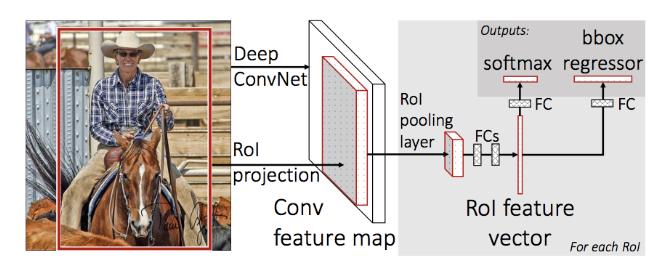
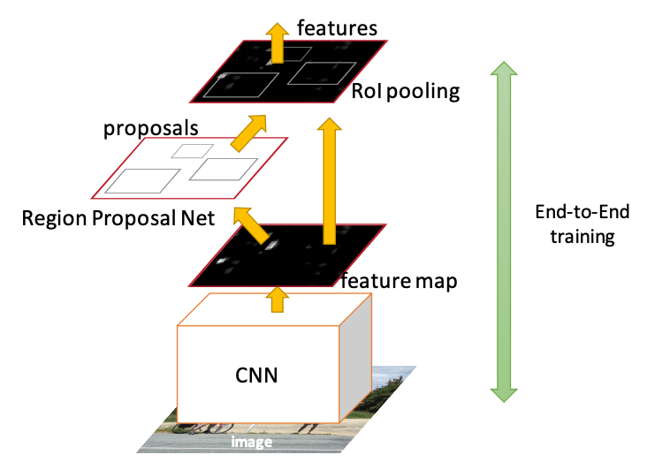
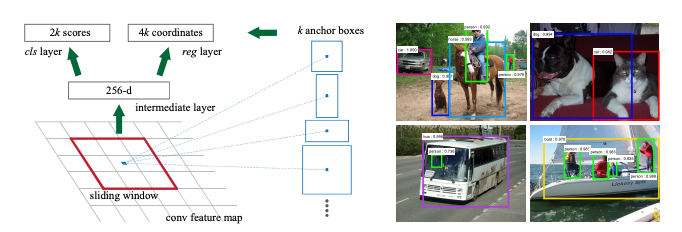
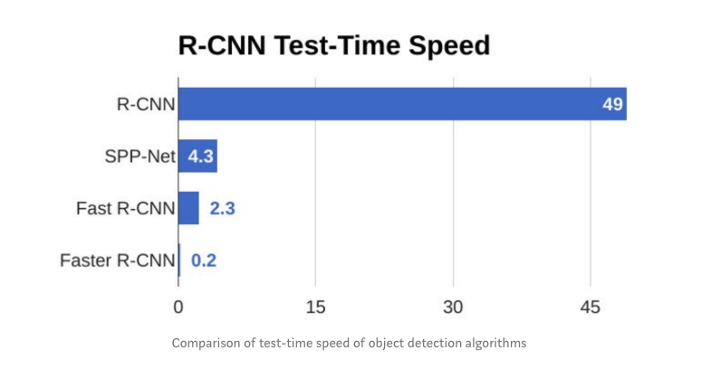

Fast and Faster RCNN Object Detection
Contents
2.3. Fast and Faster RCNN Object Detection#
2.3.1. Fast RCNN#
Fast-RCNN is the second generation RCNN that aimed to accelerate RCNN. Apart from the complex training of RCNN, its inference involved a forward pass for each of the 2000 proposals.
 Fast RCNN Architecture
A Fast RCNN network takes as input an entire image and a set of proposals \(R\). The set of proposals is produced by the selective search alg used in RCNN and its similarly around 2000 per image.
The network first processes the whole image with a CNN having several convolutional (experiments were done for 5-13 layers) and 5 max pooling layers to produce a feature map. The selective search met in RCNN, produces region proposals and for each proposal, a region of interest (RoI) pooling layer (see below) extracts a fixed-length feature vector from the feature map. This is in contrast to the RCNN that fed the different proposals to the CNN. Now we only have one feature map and we elect regions of interest from that.
Each feature vector is fed into a sequence of fully connected (fc) layers that finally branch into two sibling output layers: one that produces softmax probability estimates over K object classes plus a catch-all “background” class and another layer that outputs four real-valued numbers for each of the K object classes. Each set of 4 values encodes refined bounding-box positions for one of the K classes.
The key element in the architecture is the RoI pooling layer.
What is an RoI? An RoI is a rectangular window into a feature map. Each RoI is defined by a four-tuple (r, c, h, w) that specifies its top-left corner (r, c) and its height and width (h, w).
The RoI pooling layer uses max pooling to convert the features inside any valid region of interest into a small feature map with a fixed spatial extent of H × W (e.g.7 × 7), where H and W are layer hyper-parameters that are independent of any particular RoI. RoI max pooling works by dividing the h × w RoI window into an H × W grid of sub-windows of approximate size h/H × w/W and then max-pooling the values in each sub-window into the corresponding output grid cell. Pooling is applied independently to each feature map channel, as in standard max pooling.
As you may have noticed we have replaced the SVN and the training can happen end to end starting from a pretrained CNN and using a multi-task (classification, regression) loss function. NMS is maintained just like in RCNN to produce the final box.
2.3.2. Faster RCNN#
With Faster RCNN, we are not making changes to Fast RCNN detector itself bur rather to the input of the CNN. The selective search algorithm that is considered slow and computationally expensive is replaced with a neural network called the Region Proposal Network (RPN) that as the name implies produces the proposals.
 Faster RCNN Architecture - the RPN tells the Fast RCNN detector where to attend to
Therefore, in this architecture there is one CNN network that does not only produces a global feature map but also it produces proposals from the feature map itself rather than the original image.
 Region Proposals as generated by the RPN network
It is doing so by sliding a window \(n \times n\) over the feature map. At each sliding-window location, we simultaneously predict multiple region proposals, where the number of maximum possible proposals for each location is denoted as \(k\). So the regression layer has \(4k\) outputs encoding the coordinates of \(k\) boxes, and the classification layer outputs \(2k\) scores that represent the probability of the presence of an object or not an object for each proposal.
The \(k\) proposals are parameterized relative to \(k\) reference boxes, which we call anchor boxes. The size can be changed but the original paper used anchor size of (128 × 128, 256 × 256, 512 × 512) and three aspect ratios (1:1, 1:2 and 2:1). An anchor is centered at the sliding window in question, and is associated with a scale and aspect ratio. By default we use 3 scales and 3 aspect ratios, yielding k = 9 anchors at each sliding position. For a feature map of a size \(W × H\) (typically ∼2,400), there are \(W \times H \times k\) anchors in total.
The RPN network produces a classification score i.e. how confident we are that there is an object for each of the anchor boxes as well as the regression on the anchor box coordinates.
We train the network end to end using a loss function that is per anchor and can be expressed as:
